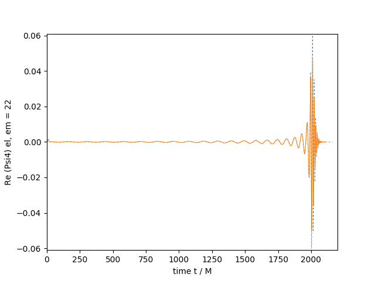

Running the scalar field example
Here we explain the scalar field example found in the code, which implements an oscillaton, which is a compact object where the scalar field gradients balance the gravitational attraction, leading to a long-lived, local, oscillating configuration.
Physical scenario
This page describes running the Scalar Field example using the parameters found in this parameter file.
Initial data
The initial scalar field profile is set in OscillatonInitialData.hpp).
This uses a stationary solution obtained from a shooting method, which has then been interpolated using chebychev polynomials to give something we can impose analytically. At large radius it reduces the the Schwarzschild metric.
The values for \(Gamma^i\) could be calculated analytically from derivatives of the conformal metric, but instead we calculate it numerically using the GammaCalculator.hpp tool.
Time-symmetric metric data for the fitted ground-state oscillaton profile.
The source solution is supplied in areal-polar coordinates,
In Cartesian coordinates this is
The CCZ4 variables are chi = det(gamma)^(-1/3) = g_rr^(-1/3) and h_ij = chi gamma_ij. K and A_ij are zero. At the initial oscillaton phase the field profile phi=0 and its conjugate momentum Pi is nonzero.
The conformal connection Gamma^i is evaluated numerically from h_ij using a separate class GammaCalculator, which is required for consistency since the metric is not conformally flat.
The fitted profiles are finite Chebyshev expansions in
They are smooth and even at the origin.
The geometry approaches a Schwarzschild solution of mass \(M=0.52459888\) at large r.
Note that this profile uses a scalar mass \(\mu=1\) and Newton's constant \(G=1\).
We currently impose a fixed hierarchy of 2:1 refinement grids.
Diagnostics
In this example we show how to extract evolution and diagnostic data along a line through the centre of the oscillaton using the particle interpolator.
Further details are below.
Computational set up
Please read the Performance Optimisation guide to understand how to divide the domain into boxes that are shared over the MPI ranks, as this is crucial for obtaining good performance on HPC systems. When GRTeclyn regrids (always at the first step, and at later steps as requested by the user), it will output the grid setup to the output file. This tells you how many boxes are on each level, and what their sizes are. This is very useful for understanding if you are load balancing appropriately.
The parameters should be mostly self explanatory if you are familiar with NR, but you can look at the Parameters guide for more details.
Typically, on a CPU system, dividing the domain up into 16^3 boxes, and running on 512 CPU cores with 512 MPI ranks, we obtain a speed of xx M/hr in code units. The speed is output at every timestep to the output file. This is just a rough measure obtained by dividing the current simulation time by the total runtime, so if the simulation freezes it won't go immediately to zero.
Typically, on a GPU system, dividing the domain up into 32^3 boxes, and running on 8 GPUs (1 node) with 8 MPI ranks, we obtain a speed of xxx M/hr in code units.
If you are seeing speeds significantly less than these you may have some memory bottleneck on your system. It will be worth trying to resolve this rather than running at a slower speed - your system admins should be able to advise on how to do this.
Checking the outputs
Viewing 3D data and 2D slices
See Visualising Ouputs for details on visualising. Note that checkpoint files are not viewable with AMReX, only plot files are.
You probably want to look at the scalar profile phi, and perhaps also the conformal factor chi. Both should oscillate during the evolution.
Plots from data files
The example also outputs some ASCII datafiles for post processing in a data folder. Firstly, it gives a file scalar_profile.dat, which gives the scalar profile over time.
This can be plotted using a python script such as:
Add one here
TODO: replace this: The resulting image should look like

.